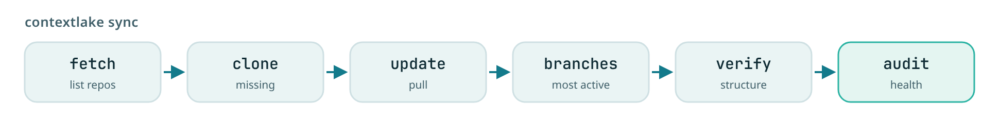
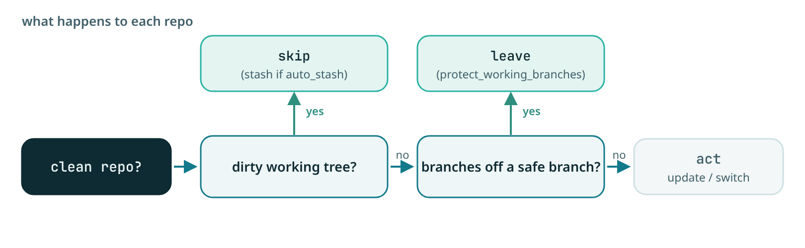

Mirror repositories
Mirror your Git repos locally and keep them fresh: fetch, clone, update, most-active branch, verify, and audit, with branch-safety guardrails.

Mirror your Git repositories locally and keep them current: fetch, clone, update, switch to the most active branch, verify, and audit, with branch-safety guardrails. New here? Start with the Quickstart. For settings see Configuration; for scheduling a sync see Bootstrap and keep it fresh; for the knowledge layer see the Knowledge layer overview.
Note
Knowledge-layer commands (index, connect, embed, wiki, query, graph, and so on) are
documented in the Knowledge layer overview and the
command reference. This page covers the mirror and sync commands.
Four platforms, one vocabulary. mirror runs against GitLab (the default), GitHub, Bitbucket and
Gitea, including its Codeberg and Forgejo flavors. Pick one with platform in the config file or
contextlake init --platform github, and name the group / org / workspace / owner with the generic
group key (Configuration). The word GitLab outlives that choice in several
places: this page's wording, the --group help text, the cached project files
(gitlab_projects.txt / .json) and the GitLab projects (active) line in mirror status. Read
all of those as "the remote you configured", whichever one it is.
Command reference#
Every command carries its own scoped help, contextlake <command> --help shows
just that command's flags with worked examples, and bare contextlake prints the
full command list. Shell tab-completion is registered for you on first run; see
Shell completion.
Mirror a subset with --repos. Every mirror command (and bootstrap / kb index
--workspace) accepts --repos PATTERN, a comma-separated glob filter over your
repo paths, so you can mirror and index just a handful instead of the whole group.
Ideal for a demo or a try-before-fleet run:
contextlake bootstrap --repos "team/api,billing/*,frontend/*" # mirror + index just these
contextlake mirror sync --repos "team/*" # sync one namespace
contextlake kb index --workspace ~/work --repos "billing/core,team/api"
Each pattern is matched against the repo's group-qualified path and its local path,
case-insensitively. Patterns are anchored: --repos api selects a repo named
exactly api, never payments-api or api-gateway. For a substring match, say so
with a glob:
contextlake mirror sync --repos "*api*" # everything with "api" anywhere in its path
That is the way round it is because a filter that selects more than you asked for is
the expensive mistake: you discover it after a fleet-wide run you did not want. Earlier
versions defaulted to substring matching with an opt-in --repos-exact; that flag is
gone, and so is the surprise.
The filter scopes the whole pipeline: fetch narrows the cached project list, and
clone / update / branches / verify / status / bootstrap all follow from that.
The scope belongs to the invocation, not to the cache. Pass the same --repos to each
command (or set repo_filter in your config to make it permanent). A command run at a
different scope re-enumerates rather than answering from a project list some other
filter shaped, and status, which cannot enumerate, says so instead of reporting a
subset as the group.
Preview with -n / --dry-run. Every mirror command accepts -n (the short form, matching the
near-universal rm/cp/make convention) to show what would happen without cloning, updating, or
switching a single branch:
contextlake mirror update -n
# DRY RUN: no repositories will be cloned, updated, or switched
Pair it with --repos to preview a change scoped to just the repos you're about to touch.
contextlake mirror sync runs the whole mirror pipeline end to end; each stage is also
available as its own command:

mirror status: check current synchronization status#
Shows the current state of your workspace compared to the remote, from the fetch cache.
contextlake mirror status
Example output:
• GitLab projects (active) 128
• Local repositories 128
✓ Synchronized 127
⚠ Missing 1
⚠ Extra 1
- GitLab projects (active) = projects you can see on the remote, archived ones excluded. The
count comes from the fetch cache, so it is as fresh as your last
fetch. - Local repositories = repos cloned in your workspace.
- Synchronized = present in both, and matching.
- Missing = a repo exists on the remote but isn't in your workspace,
clone(orsync) will fetch it. - Extra = a repo is in your workspace but not on the remote, usually one that was
renamed, archived, or removed there;
contextlakeleaves it alone for you to review. - Other groups = clones whose
originremote says they came from a different group. Only shown when there are any. See below.
A fully synced workspace shows 0 for both.
Workspaces holding more than one group. Local paths are relative to the group, so a clone of
alpha/team/api and one of beta/team/api both land at team/api and the path cannot say which
group a repo came from. status, verify, and the branch-switch pass therefore read each clone's
origin remote and leave repos from other groups out of scope: they are counted under Other
groups rather than reported as Extra, and the branch pass does not try to switch them. Only a
repo whose origin positively names a different group drops out. A clone with no origin, or one whose
config cannot be read, is still reported as before, so a genuinely stray checkout never goes quiet.
mirror fetch: fetch every project you can see#
Retrieves all repositories from the configured group / org / workspace / owner and caches them locally.
contextlake mirror fetch
This command:
- Uses the configured platform's REST API with pagination to fetch all projects
- Includes subgroups automatically
- Skips archived repositories
- Caches results in
gitlab_projects.txtandgitlab_projects.json, under a per-workspace subdirectory of~/.cache/contextlake(override withcache_dir)
mirror clone: clone missing repositories#
Clones any repositories that exist on the remote but are missing locally.
contextlake mirror clone
This command:
- Compares the cached project list with local repositories
- Creates a directory structure mirroring the remote's group/subgroup hierarchy
- Uses HTTPS cloning for better authentication
- Clones up to 8 repositories concurrently
- Handles timeouts gracefully (300s per repository)
How each repo is cloned (clone_method = auto, the default): with the platform's token env var set
(GITLAB_TOKEN, GITHUB_TOKEN, BITBUCKET_TOKEN or GITEA_TOKEN, or whatever token_env names),
contextlake clones with plain git, passing the token as an auth header
through the child environment, never on the command line and never in the URL, so
it can't leak into ps output or .git/config. Without a token it uses glab repo
clone (glab's own auth) when glab is installed, which is a GitLab-only path, else plain
git clone over HTTPS. Set clone_method = git or glab to force one path.
mirror update: update existing repositories#
Fetches and pulls the latest changes for all local repositories.
contextlake mirror update
This command:
- Fetches the current branch from
origin - Fast-forwards it to
origin, never merging or rebasing - Skips a repo on a detached HEAD, there is no branch to fast-forward
- Skips a branch that has diverged from its upstream, and says so, for you to reconcile by hand
- Reports repositories that are already up to date
mirror branches: switch to most active branches#
Analyzes all repositories and switches them to their most active development branch.
contextlake mirror branches
This command:
- Fetches all remote branches for each repository
- Calculates commit count for each branch
- Identifies the branch with the most commits (most active)
- Switches to the most active branch if different from current
- Pulls latest changes after switching
Branch selection: the default branch_strategy = "hybrid" scores each branch on a
weighted blend of 60% normalized commit count + 40% normalized recency, so a branch
that is both busy and recently touched wins. Two alternatives exist: commits (highest
commit count, the legacy behaviour) and recency (most recent commit). Archived repos,
repos without branches, and detached-HEAD states are skipped.
mirror verify: verify repository structure#
Checks that the local workspace structure matches the remote exactly.
contextlake mirror verify
This command:
- Compares local repositories with the cached project list
- Identifies nested
.gitdirectory structures (indicates incorrect cloning) - Lists extra local repositories (not on the remote)
- Lists missing repositories (on the remote but not local)
- Reports synchronization status
mirror sync: full synchronization#
Runs the complete synchronization pipeline in sequence.
contextlake mirror sync
This command executes:
fetch- Get the latest project listclone- Clone missing repositoriesupdate- Update existing repositoriesbranches- Switch to active branchesverify- Verify structureaudit- Report repo health & age (skip with--no-audit)
mirror audit: repo health & age report#
Scans every local clone and reports which repos are effectively empty and how old/active
they are. Runs automatically at the end of sync, and in bootstrap immediately after the mirror
step (stage 2 of 8, before the knowledge layer is built), or on demand:
contextlake mirror audit # summary to console + report to <cache_dir>/repo_audit.json
contextlake mirror audit --report ./audit.json # choose where the per-repo JSON + .csv are written
contextlake mirror sync --no-audit # run sync without the audit step
It classifies each repo as empty (no commits/files), readme-only (just a template
README), boilerplate (only meta files), or content, and reports each repo's
creation date (GitLab created_at, captured during fetch; falls back to the first git
commit) and last commit date (from the local clone), with an aggregate summary
(counts, oldest/newest, how many stale over 1–2 years, repos with no commits). The full
per-repo table is written as JSON and CSV. The scan is parallel, read-only, and works
offline from the fetch cache.
Configuration#
contextlake's config-file precedence and the full settings reference now have their own page: Configuration.
Branch safety#
The tool protects your local work without getting in your way. The guiding rule:
a clean repo is always safe to act on, the branch name alone never causes a skip.
The only setting that blocks an update is the one that catches a dirty working tree.
Two states stop an update on a clean tree as well, and neither is configurable, because both are
about there being no fast-forward to perform rather than about protecting your work: a repo on a
detached HEAD (no branch to update) and a branch that has diverged from its upstream (a
mirror fast-forwards, it never merges or rebases). Both are reported per repo as skips with the
reason, so a green run is not a promise that every clean repo moved. See
Reading the console output.

The three checks#
- Clean-workspace check, the main guard. Detects a dirty working tree: uncommitted, unstaged,
or untracked changes. A dirty repo is skipped by both
updateandbranches, so local work is never clobbered. - Automatic stashing, optional. Stashes a dirty tree so
updatecan proceed instead of skipping. It affectsupdateonly. - Working-branch protection, which applies to
branchesonly. It keepsbranchesfrom moving a repo off a branch outsidesafe_branches, so you are never switched away from a feature branch you are working on.
Which setting affects which command#
| Setting | mirror update |
mirror branches |
Default |
|---|---|---|---|
require_clean_workspace |
yes, the main guard | yes | true |
auto_stash |
yes | no effect | false |
protect_working_branches |
no effect | yes | true |
safe_branches |
no effect | yes, the list branches may switch away from |
main,master,develop,development |
branch_strategy |
no effect | hybrid (60% commit count, 40% recency), commits, or recency |
hybrid |
The two "no effect" rows are the ones people get wrong, and they follow from the guiding rule above:
update pulls the branch you are already on, so being on a feature branch is not a reason to hold
back. Of the settings in this table, only the dirty-tree guard holds update back; the two
structural skips above (detached HEAD, diverged branch) are not settings at all.
What each looks like#
A working branch left alone by branches:
[1/12] ⊘ backend/services/api-gateway: Skipped branch switch (on working branch: feature/my-feature)
A plain contextlake mirror update would instead pull feature/my-feature here, since the working
tree is clean.
A dirty tree skipped by update:
[1/12] ⊘ backend/services/api-gateway: Skipped (unsafe: Uncommitted changes (or indeterminate working-tree state))
The same repo with --auto-stash:
⚠ backend/services/api-gateway: Changes stashed successfully
[1/12] ✓ backend/services/api-gateway: Updated main
The [i/total] counter is part of every per-repo status line. Redirect the output to a file and each
line also carries a [YYYY-MM-DD HH:MM:SS] timestamp; on a terminal it does not, because the clock
is rendered on the right instead. See Reading the console output.
Setting them#
These are automation levers rather than things to guess at interactively, so they are kept out of
the default --help listing; run contextlake mirror update --help-advanced to see them alongside
every other mirror-tier flag. Every one has a .contextlake.ini equivalent, which is its primary
home:
# In .contextlake.ini
[contextlake]
protect_working_branches = true
safe_branches = main,master,develop,staging
require_clean_workspace = true
auto_stash = false
# Or via CLI
contextlake --safe-branches main,master,develop,staging --auto-stash mirror update
Disabling a safety check#
Turning a guard off is rarely what you want, and one of the two flags people reach for does nothing here:
contextlake --no-require-clean-workspace mirror update
That one is real: it lets update pull over a dirty working tree, which can leave you with merge
conflicts or lost work. --no-protect-working-branches has no effect on update at all, because
update never consults it; it only loosens mirror branches.
Troubleshooting#
The mirror's symptom table, along with the install-side problems, lives on one page: Troubleshooting. Keeping it there means a reader who is stuck looks in one place rather than guessing which page owns their symptom.
See also#
- Bootstrap and keep it fresh, scheduling a sync and re-indexing on commit
- Configuration, the full settings reference
- Reading the console output, the status glyphs and the exit codes
- Knowledge layer, what to build on top of the mirror
- Troubleshooting, when a mirror command misbehaves